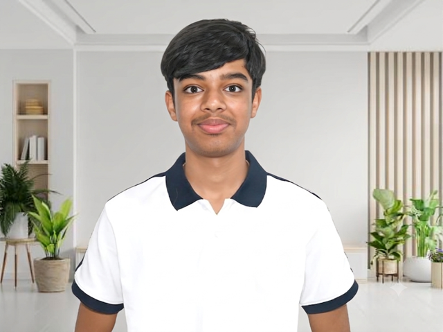
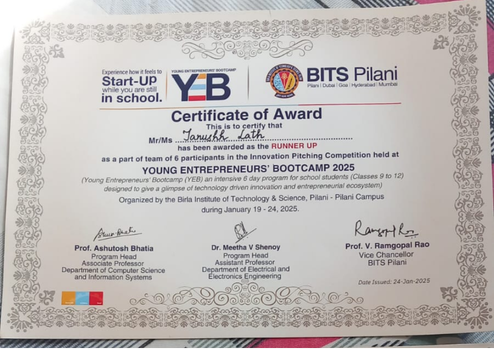

Wizmo — AI Parent Assistant
An AI-powered Parent Assistant chatbot designed to make school information easier for parents to access.

A person, not a résumé
Born & brought up in Dubai, UAE Schooling in Jaipur, India
I build, lead, compete, and keep asking better questions.
I'm a Grade 11 student interested in AI, computer science, entrepreneurship, and ideas that can create real-world impact. I spend my time building projects, taking on leadership opportunities, competing, and exploring what technology can do for people.
Currently building
Digital Skills & Opportunity Initiative
A planned initiative for students from rural communities in Rajasthan.
Currently learning
Indian Computing Olympiad prep
Algorithms, computational thinking and advanced problem-solving.
Currently exploring
AI-assisted work and employability
How basic AI and digital tools can help people do useful, paid work.
Work
An AI-powered Parent Assistant chatbot designed to make school information easier for parents to access.

Reached the Grand National Finale of InnoVenture in two consecutive years, 2023 and 2024.
An initiative to help students from rural communities develop practical digital and AI skills and gain access to real work opportunities.

Finished as 1st Runner-Up in the entrepreneurship competition at BITS Pilani's Young Entrepreneurship Bootcamp.
What I care about
Curiosities
Curiosities
Hobbies
My story

“An idea only becomes useful when you can bring people with you.”2024Taking the Stage